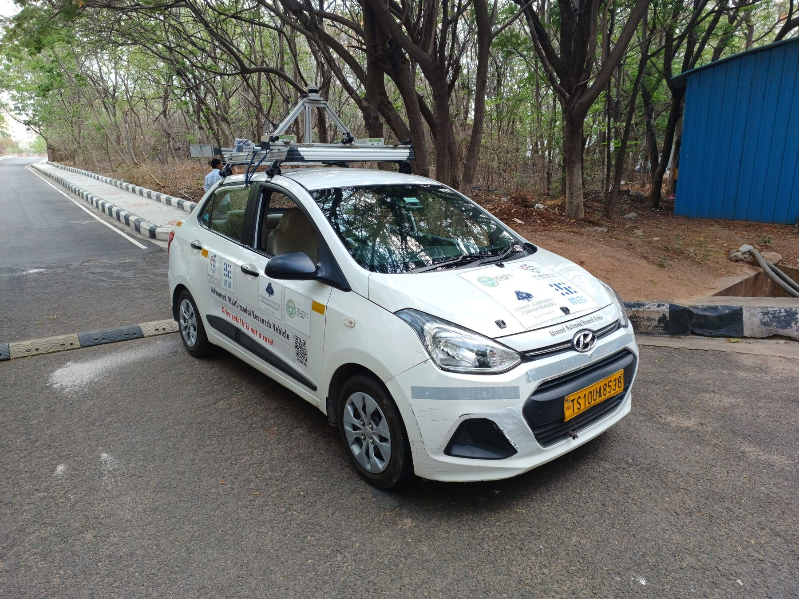
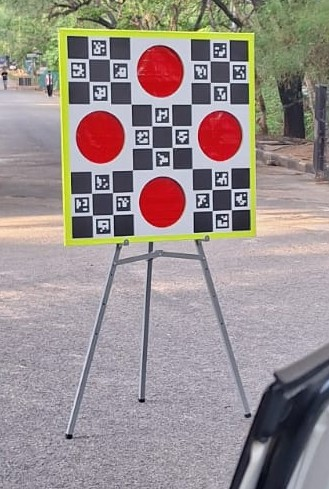
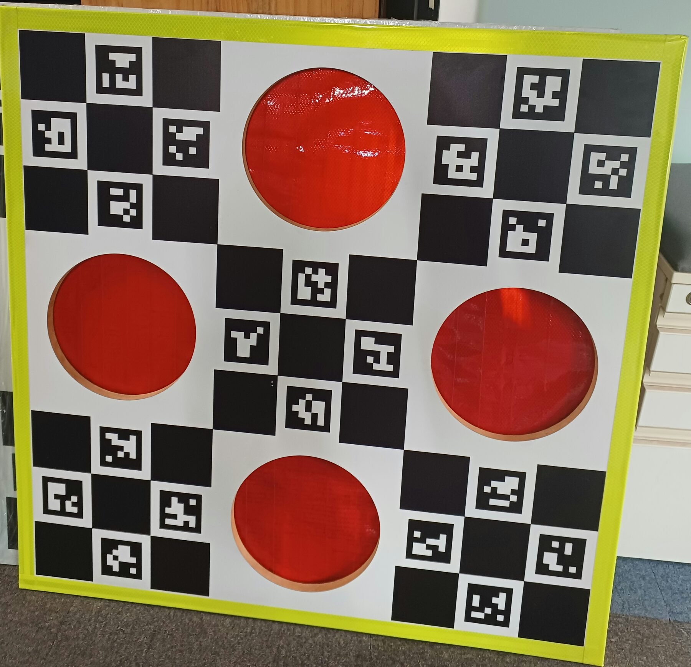

LiDAR–Camera Calibration
Target-based calibration of six camera intrinsics and camera–LiDAR extrinsics for an autonomous-driving sensor rig
- Method
- Hybrid ChArUco/reflective target, geometric filtering of LiDAR returns, and robust multi-frame optimization for camera–LiDAR extrinsics.
- Stack
- Python, OpenCV, NumPy, SciPy, scikit-learn, Rerun
- Hardware
- Six Teledyne FLIR Blackfly S cameras and an Ouster OS1-64 LiDAR
I developed a calibration pipeline for the sensor rig on Bodhyaan, the autonomous vehicle from I-Hub Data at IIIT Hyderabad. The platform combines six Teledyne FLIR Blackfly S cameras with Edmund Optics lenses and an Ouster OS1 64-channel LiDAR.
The goal was to recover accurate camera intrinsics and the rigid LiDAR-to-camera transformations needed to project 3D LiDAR measurements into every image. The intrinsic calibration achieved a reported reprojection error below 0.05; the units and averaging method are not specified here.
Validation criteria
| Check | Threshold | Meaning |
|---|---|---|
| Image-side target pose | At least 8 corners; RMSE ≤ 1.5 px | Requires enough ChArUco observations and limits image reprojection error for the board pose. |
| LiDAR board fit | RMSE ≤ 2 cm | Limits the residual between detected circle centers and the fitted rigid target geometry. |
| Target geometry | Maximum spacing error ≤ 4 cm | Rejects detections whose pairwise circle spacing disagrees with the known target. |
| Final extrinsic inliers | Reprojection residual ≤ 6 px | Filters correspondences after robust optimization, before the final least-squares fit. |
These are filtering thresholds, not measured calibration accuracy. Camera intrinsic calibration and camera–LiDAR extrinsic alignment are separate evaluations. The campus-drive video below provides a qualitative check of LiDAR-to-image alignment. Calibration code and parameters ↗
Sensor platform


A target visible to both sensors
A standard printed board is easy for a camera to detect but gives weak and ambiguous LiDAR returns. I built a 0.96 m square hybrid target with a ChArUco pattern, a retroreflective outer border, and four 24 cm reflective circles. The circle centers form a cross with 0.6 m horizontal and vertical spacing, giving both sensors the same known geometry.
RGB and LiDAR comparison before and after adding retroreflective material to the target.

Calibration pipeline
- Pair the observations. Point-cloud
.npzfiles and camera images are paired by filename, using matching filename stems to associate each scan with an image. - Estimate the image-side target pose. Raw Bayer RGGB images are converted to RGB, ArUco markers are detected and remapped to the physical board layout, and ChArUco corners are interpolated. OpenCV's iterative PnP solver estimates the camera-to-board pose using the saved camera matrix and distortion coefficients. Frames require at least eight ChArUco corners and are rejected if their image reprojection RMSE exceeds 1.5 px.
- Extract the target from the LiDAR scan. The code crops the working volume, keeps points above a reflectivity threshold of 75, fits the board plane with PCA, and aligns it in 2D. After removing the reflective outer border, DBSCAN separates the four circles. Median-based centers and geometric filters reject sparse, tiny, or line-shaped clusters before assigning the left, right, top, and bottom roles.
- Fit and validate the 3D board pose. An SVD-based rigid alignment fits the known four-circle model to the detected LiDAR centers. A frame is accepted only when the board-fit RMSE is at most 2 cm and the maximum pairwise-spacing error is at most 4 cm.
- Solve the extrinsics across frames. The accepted LiDAR centers are matched to image pixels obtained from the ChArUco pose. The LiDAR-to-camera transform is initialized both with EPNP inside RANSAC and from the mean of per-frame rotation estimates with median translation. Each candidate is refined using SciPy's soft-L1 least squares; residuals above 6 px are removed before a final linear least-squares pass, and the solution with the lowest inlier RMSE is retained.
Diagnostics and output
The pipeline reports aggregate and per-frame reprojection statistics, board-fit residuals, inlier counts, and pose-consistency checks. Rerun views overlay the target and projected LiDAR centers, visualize residual vectors in 2D and 3D, and make problematic frames easy to inspect.
The final artifact stores both camera-from-LiDAR and LiDAR-from-camera 4×4 transforms, rotation and translation vectors, camera intrinsics and distortion, per-frame transforms, and per-point error and inlier metadata in NPZ, with optional JSON export.
Road-test result
LiDAR points projected into the camera view during a complete drive around the IIIT Hyderabad campus. Open on YouTube ↗